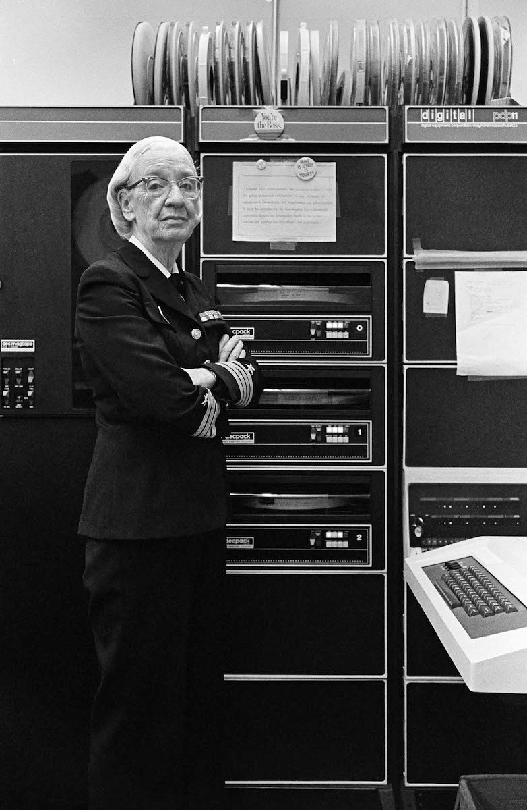

Grace Hopper: The Woman Behind Compilers

Hopper in a computer room in Washington, D.C., 1978
- December 9th, 1906 - Born Grace Murray in New York City, USA.
- 1928 - Graduated Phi Beta Kappa from Vassar College.
- 1930 - Earned a master's degree at Yale University.
- 1930 - Married Vincent Hopper (later divorced in 1945).
- 1934 - Earned a Ph.D in mathematics from Yale.
- 1941 - Promoted to Associate Professor at Yale.
- 1943 - Was sworn into the U.S. Navy Reserve.
- 1944 - Assigned to the Bureau of Ships Computation Project at Harvard University.
- 1949 - Employed at Eckert–Mauchly Computer Corporation as a senior mathematician, joining the team developing the UNIVAC I.
- 1952 - Developed her A-0 system, an operational link-loader (early version of a compiler).
- 1954 - Named Remington Rand's first director of automatic programming.
- 1959 - Attended the CODASYL, and served as a technical consultant to the committee that formed COBOL.
- 1966 - Retired at the age of 60, but was recalled a year later.
- 1967 to 1977 - Became Director of the Navy Programming Languages Group in the Navy's Office of Information Systems Planning, and developed validation software for COBOL and its compiler.
- 1971 - Retired again, but was asked to return to active duty a year later (again).
- 1983 - Promoted to Commodore (a rank which was later renamed 'Rear Admiral').
- 1986 - Retired (for real this time) from the Navy.
- Post-retirement - Was hired as a senior consultant to Digital Equipment Corporation, where she continued to work.
- 1992 - Passed away at the age of 85.